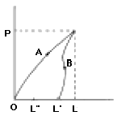
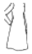
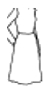
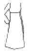
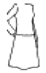

패션디자인산업기사 (2005-03-06 기출문제)
1과목: 피복재료학
1. 다음 조직으로 된 직물 중 표면에 광택이 가장 많이 나타나는 것은?
- 평직
- 수자직
- 사문직
- 이중직
(정답률: 알수없음)

2. 다음 중 모시의 용도를 바르게 설명한 것은?
- 호스, 그물, 노끈
- 선박용 밧줄, 곡물을 담는 부대
- 깔개, 솔
- 여름 의복감, 가죽을 꿰매는 실
(정답률: 알수없음)
3. 여러가닥의 장섬유로 구성된 실을 무엇이라 하는가?
- 혼섬사
- 멀티 방적사
- 모노 방적사
- 멀티 필라멘트사
(정답률: 알수없음)
4. 실의 굵기를 나타내는 것은?
- cm
- g
- 번수
- 단면의 지름
(정답률: 알수없음)
5. 실에 꼬임을 가하였을 때 변화되는 사항으로 가장 상관이 적은 것은?
- 장력의 변화
- 길이의 변화
- 강도의 변화
- 광택의 변화
(정답률: 알수없음)
6. 다음 중 사문조직의 특징을 나타낸 것은?
- 평조직에 비하여 마찰에는 약하지만 광택은 좋다.
- 간단한 개구장치로 제직할 수 있다.
- 겉면은 씨실이나 날실만으로 짜인 것 같이 보인다.
- 실의 굴곡이 가장 많고 겉면은 부드럽고 매끄럽다.
(정답률: 알수없음)
7. 다음 중 종자섬유에 속하는 것은?
- 무명
- 야자
- 마닐라마
- 대마
(정답률: 알수없음)
8. 엠보싱 가공이란?
- 면직물을 진한 수산화나트륨으로 처리하여 표면이 오돌토돌한 가공
- 열가소성 섬유나 수지처리한 직물에 요철을 가진 캘린더로 처리하는 가공
- 직물표면에 잔털을 태워 제거하는 가공
- 양모직물의 길이와 폭이 수축되고 두꺼워져 조직이 치밀하여 지는 가공
(정답률: 알수없음)
9. 섬유내의 분자들을 중합시키는 중요한 역할이 되지 않는 것은?
- 극성결합
- 수소결합
- 반데르바알스인력
- 산소결합
(정답률: 알수없음)
10. 견.인견 직물의 가공작업을 마무리할 때 촉감이 너무 단단하면 그것을 부드러운 촉감을 주도록 하는 가공에 속하는 것은?
- 유포공정
- 준비공정
- 청정공정
- 축융공정
(정답률: 알수없음)
11. 섬유가 습윤하였을 때 강력이 더 증가하는 섬유는?
- 비스코스(viscose)
- 양모(wool)
- 면? (cotton)
- 아세테이트(acetate)
(정답률: 알수없음)
12. 자외선 차단가공에 이용되는 물질이 아닌 것은?
- 로드유
- 이산화티탄
- 산화아연
- 세라믹
(정답률: 알수없음)
13. 나일론의 특성을 잘못 표현한 것은?
- 강도가 크다.
- 열가소성이 좋다.
- 산성염료로 염색된다.
- 내일광성이 좋다.
(정답률: 알수없음)
14. 아세톤에 용해되는 섬유는?
- 아세테이트
- 비닐론
- 나일론
- 아크릴
(정답률: 알수없음)
15. 양모섬유의 분자구조를 형성하는 결합과 관계없는 것은?
- 시스틴결합
- 조염결합
- 펩티드결합
- 글리코시드결합
(정답률: 알수없음)
16. 옆의 그림은 외력이 가해진 섬유의 변화이다. 작용에 의해 OL만큼 늘었다가 외력이 없어진 후 곡선 B에 따라 L'까지 회복되었다. 시간이 경과하면서 L"까지 회복되었다. 맞는 것은?

- OL"는 탄성 회복율이다.
- OL'는 지연탄성이다.
 은 직시(直時) 탄성회복율이다.
은 직시(直時) 탄성회복율이다. 은 지연 탄성회복율이다.
은 지연 탄성회복율이다.
(정답률: 알수없음)
17. 축합중합에 의하여 제조되는 합성섬유는?
- 폴리에스테르
- 올레핀
- 비닐론
- 아크릴
(정답률: 알수없음)
18. 산아미(酸亞美)가공의 특징은?
- 양모에 알칼리를 처리하는 것
- 산에 용해시켜 아교상태로 만든 후 건조시키는 것
- 무기산을 처리하여 세리신을 제거하는 것
- 유기산에 견을 처리하여 광택과 견명을 증가하는 것
(정답률: 알수없음)
19. 폴리에스테르 섬유에 가장 적당한 염료는?
- 분산염료
- 직접염료
- 산성염료
- 반응성염료
(정답률: 알수없음)
20. 천을 충분히 수축시켜 잔류수축이 일어나지 않게 하는 물리적 방축가공은?
- 텍스쳐드가공
- 벌키가공
- 샌퍼라이즈가공
- 증융가공
(정답률: 알수없음)
2과목: 패션디자인론
21. 의복의 직선이 주는 느낌을 가장 올바르게 표현한 것은?
- 편하고 단순하며 유동적이다.
- 부드럽고, 유연하며 여유가 있다
- 우아하며 여성적인 분위기를 나타낸다.
- 딱딱하고 강하며 단순하고 힘이 있다.
(정답률: 알수없음)
22. 대칭균형(formal balance)에 대한 설명 중 틀린 것은?
- 솔직함과 정적인 느낌
- 생동감이 있고 개성적
- 평범성이 있고 수동적
- 단조로움과 딱딱한 인상
(정답률: 알수없음)
23. 트리밍의 종류가 아닌 것은?
- 브레이드
- 스팡글
- 프린지
- 핀턱
(정답률: 알수없음)
24. 기업내에서 디자이너가 작업지시서로 주로 사용하는 것은?
- 착장화
- 도식화
- 자태화
- 예상도
(정답률: 알수없음)
25. 다음 중 의복의 실루엣(silhouette)선으로 표현되지 않는 부분은?
- 스커트의 길이
- 칼라의 형태
- 소매의 형태
- 어깨의 패드 여부
(정답률: 알수없음)
26. 트리밍의 역할과 효과로 적합한 설명이 아닌 것은?
- 재료나 디자인이 단순한 경우에 효과를 얻을 수 있다
- 지나치게 사용하면 조잡한 느낌을 줄 수 있다.
- 위치 선정이나 분량, 크기 등을 잘 조절해야 한다.
- 장식을 달거나 별도로 만들어 부착하므로 고급스러워 보여야 한다.
(정답률: 알수없음)
27. 키가 작은 체형인 사람이 선택할 디자인은?
- 웨이스트 라인을 약간 로우웨이스트 라인으로 한다.
- 큼직한 디자인과 액세서리를 택한다.
- 포켓이나 칼라와 같은 디테일을 크게 한다.
- 너무 많은 디테일은 피하고 되도록이면 간단한 디자인을 택한다.
(정답률: 알수없음)
28. 파랑, 빨강, 노랑을 삼원색으로 하며 미술재료에서 경험할 수 있는 혼합은?
- 가법혼합
- 병치혼합
- 중간혼합
- 감법혼합
(정답률: 알수없음)
29. 다음은 기하학적 무늬에 대한 설명이다. 옳은 것은?
- 거칠거나 큰 무늬는 트리밍을 사용하면 더욱 장식적인 느낌이 난다.
- 조그만 줄무늬나 체크무늬는 서로 솔기에서 줄을 맞추어야 하므로 디자인하기가 어렵다.
- 대담한 체크무늬와 플레이드 무늬는 대담한 빅 코트와 케이프 등에 인기가 있다.
- 단조로운 조직상의 줄무늬는 캐주얼한 정장이나 운동복에 주로 사용된다.
(정답률: 알수없음)
30. 스커트의 형태 중 몸에 꼭 맞는 자연형태가 아닌 것은?
- 내로우 스커트(narrow skirt)
- 파니에 스커트(pannier skirt)
- 튜블러 스커트(tubular skirt)
- 호블 스커트(hobble skirt)
(정답률: 알수없음)
31. 아동의 인체가 갖는 특성을 가장 적합하게 표현한 것은?
- 근육이 없게 통통하고, 둥글둥글하게 표현한다.
- 골반은 크지 않게 거의 수직으로 그린다.
- 허리와 작은 엉덩이를 강조한다.
- 허리선이 뚜렷하고, 발목은 얇게 한다.
(정답률: 알수없음)
32. 비례의 원리를 적용시켜 재킷의 길이를 결정하려 한다. 상의의 길이로 적합한 위치는?
- 재킷의 길이가 전체의1/2과 2/3 사이에 놓이도록 한다.
- 재킷의 길이가 전체를 2등분하도록 한다.
- 재킷의 길이가 전체의 2/3보다 길게 한다.
- 재킷의 길이가 전체의 1/3보다 짧게 한다.
(정답률: 알수없음)
33. 다음은 복식 유행의 주기로부터 파생된 용어들이다. 옳지 못한 것은?
- 패드(fad) : 단명하며 수시로 변화된다.
- 디자인(design) : 장기적이며 세대간 전수된다.
- 클래식(classic) : 장기적이며 여러해 동안 지속된다.
- 패션(fashion) : 주기적이며 일년에서 수년간 지속된다
(정답률: 알수없음)
34. 인체를 크로키할 때 적당치 않는 것은?
- 움직이고 있는 포즈를 순간적으로 잘 잡는다.
- 필요한 부분을 흐르는 듯 박력있게 표현한다.
- 모델의 자세가 흐트러지기 전에 그려야 한다.
- 철저히 자세하게 그린다.
(정답률: 알수없음)
35. 복장의 본질적 요인들 중에서 열등감을 옷으로써 보상받고 또 새 옷을 입은 사람에게 즐거움을 주는 것은 어느 요인에 해당되는 것인가?
- 실용적 합리적 기능적 요인
- 사회 인지 요인
- 미적 요인
- 심리적 요인
(정답률: 알수없음)
36. 다음 유행용어 중 가장 독창적인 컬렉션이라고 볼 수 있는 것은?
- 모드(mode)
- 하이패션(high fashion)
- 오뜨 꾸띄르(haute couture)
- 쁘레따 뽀르떼(pret-a-porter)
(정답률: 알수없음)
37. 다음 가로선의 분할위치 중 길이가 가장 길어 보이는 실루엣은?




(정답률: 알수없음)
38. 프린세스 라인의 뉴룩을 비롯하여 H라인, A라인, Y라인 등 1950년대의 알파벳 라인 시대를 장식한 디자이너는?
- 폴 푸아레(Paul Poiret)
- 크리스티앙 디오르(Christian Dior)
- 가브리엘 샤넬(Gabrielle Chanel)
- 이브 생 로랑(Yves Saint Laurent)
(정답률: 알수없음)
39. 소비자들의 구매의사 결정에 가장 크게 작용하는 디자인 요소는?
- 무늬
- 색채
- 강조
- 선
(정답률: 알수없음)
40. 디테일의 규모에 대한 설명 중 잘못된 것은?
- 실루엣이 클 때에는 디테일도 크게 한다.
- 두껍고 거친 재질의 소재는 벨트의 폭을 넓게 한다.
- 체형이 작은 사람은 디테일을 크게 한다.
- 체형이 큰 사람은 칼라를 크게 하거나, 다른 디테일을 추가한다.
(정답률: 알수없음)
3과목: 의류상품학 및 복식문화사
41. 18 세기 프랑스 귀족들이 입은 몸에 꼭 끼는 바지는?
- 쁘르쁘웽(pourpoint)
- 뀔로뜨(culotte)
- 코드피스(codpiece)
- 트렁크호즈(trunk hose)
(정답률: 알수없음)
42. 시장 세분화의 방법 중 지리적 기준에 따른 분류 방법에 속하지 않는 것은?
- 지역
- 인구밀도
- 기후
- 생활주기
(정답률: 알수없음)
43. 다음 중 시대와 복식이 잘못 연결된 것은?
- 1947년 - 뉴룩(new look)
- 1978년 -모즈 룩(mods look)
- 1953년 - 튜립라인(tulip line)
- 1962년 - 큐롯 스커트
(정답률: 알수없음)
44. 패션(fashion)의 흐름이나 변천 과정의 직접적인 계기가 되는 것은?
- 창조
- 경향
- 모방
- 계승
(정답률: 알수없음)
45. 기업의 입장에서 본 광고의 기능이 아닌 것은?
- 신상품도입 기능
- 시장확대 기능
- 상품제시 기능
- 소비자보호 기능
(정답률: 알수없음)
46. 패션 사이클의 단계별 설명에 대해 틀린 것은?
- 제1단계 : 새로운 스타일의 창조와 소개
- 제2단계 : 사회적 포화상태 초래
- 제3단계 : 사회적 가시도의 증가
- 제4단계 : 사회적 동조의 증가
(정답률: 알수없음)
47. 패션 산업의 발전 과정 중 매스패션의 발생기에 해당되는 것은?
- 1920년대
- 1921 ~ 1944년
- 1945 ~ 1957년
- 1958 ~ 1964년
(정답률: 알수없음)
48. 메소포타미아 복식 중 군복(baldric)을 발달시킨 민족은?
- 수메르인
- 페르시아인
- 앗시리아인
- 바빌로니아인
(정답률: 알수없음)
49. 비잔틴의 대표적인 의상이 아닌 것은?
- 팔루다멘툼(paludamentum)
- 달마티카(dalmatica)
- 파에놀라(paenula)
- 튜닉(tunic)
(정답률: 알수없음)
50. 그리스 복식의 역사적 배경과 복식의 특성을 설명한 것 중 적당하지 아니한 것은?
- 그리스 문명의 주인은 도리아인과 이오니아인이다.
- 이오니아인은 섬세한 예술적 감각을 가졌다.
- 조화와 균형미가 잘 표현되어 있다.
- 재단이나 바느질없이 타이트한 형태로 발전시켰다.
(정답률: 알수없음)
51. 마케팅 컨셉트의 3가지 기본적인 요소가 아닌 것은?
- 고객 지향성
- 판매량을 통한 이익
- 전사적인 마케팅 노력
- 목표 지향성
(정답률: 알수없음)
52. 로마의 의상인 파에눌라를 바르게 설명하지 못한 것은?
- 모든 계층에서 입은 판초형의 외투이다.
- 모직물이나 가죽으로 만들었다.
- 흰색，갈색，자주색 등이 있었다.
- 간단한 형태의 운동복이다.
(정답률: 알수없음)
53. 패션머천다이저가 갖추어야 하는 조건이 아닌 것은?
- 소극적인 행동력
- 세련된 감성
- 풍부한 상품 지식
- 정확한 예측력
(정답률: 알수없음)
54. 머천다이징(merchandising)에 관한 설명 중 옳지 못한 것은?
- 마케팅이라는 말과 동의어로서 광범위한 의미로 해석되는 경우
- 상품기획 및 상품개발이라는 의미로 해석되는 경우
- 판매촉진의 일부를 의미하는 경우
- 상품의 구매와 판매활동이라는 의미로 해석되는 경우
(정답률: 알수없음)
55. 일반적으로 소재를 선택할 때 고려되어야 하는 조건이 아닌 것은?
- 실루엣 디자인과의 적합성
- 패션사이클과의 적합성
- 봉제가공기술, 능률과의 용이성
- 손 세탁의 용이성
(정답률: 알수없음)
56. 하위문화 집단의 독특한 정체성을 복식을 통해 나타내는 스트리트 스타일을 시대순으로 바르게 정리한 것은?
- 모즈 – 히피 – 펑크스 - 그런지
- 모즈 – 그런지 – 펑크스 - 히피
- 모즈 – 펑크스 – 히피 - 사이버 펑크
- 히피 – 모즈 – 펑크스 - 사이버 펑크
(정답률: 알수없음)
57. 시각적 표현수단으로서의 리모트 디스플레이의 방법이 아닌 것은?
- 현수막
- 호텔 로비
- 전시회
- 공항 터미널
(정답률: 알수없음)
58. 르네상스 시대의 대표적인 칼라가 아닌 것은?
- 위스크 칼라
- 메디치 칼라
- 러프 칼라
- 퀸 엘리자베스 칼라
(정답률: 알수없음)
59. 다음 중에서 르네상스 복식에 나타난 구성상의 특징과 거리가 먼 것은?
- 슬래시(slash)의 사용
- 러프(ruff)의 대형화
- 패드(pad)의 사용
- 파딩게일(farthingale)의 사용
(정답률: 알수없음)
60. 이집트의 남녀 기본 복식은?
- 칼라시리스
- 로인클로스
- 튜닉
- 하이크
(정답률: 알수없음)
4과목: 패턴공학 및 의복구성학
61. 직물의 봉제에 주로 사용되는 재봉틀로 윗실과 밑실을 사용하여 한땀 한땀 열쇠를 채우듯이 바느질이 되는 것은?
- 단환봉재봉틀
- 이중환재봉틀
- 본봉재봉틀
- 장식봉재봉틀
(정답률: 알수없음)
62. 상반신 반신체의 보정 방법이 옳은 설명은?
- 앞 진동길이를 1cm∼1.5cm 줄인다.
- 앞,뒤 진동길이를 2cm 정도 줄인다.
- 뒷 진동길이를 줄이고 앞 진동중심을 약간 늘인다.
- 앞,뒤 진동길이를 2cm정도 늘인다.
(정답률: 알수없음)
63. 다음 중 솔기명과 그 설명이 틀린 것은?
- 가름솔 - 시접을 완전히 감싸는 방법으로 어린이 옷 등에 쓴다.
- 통솔 - 시접을 완전히 감싸는 방법으로 얇고 비치거나 풀리기 쉬운 옷감에 쓴다.
- 쌈솔 - 세탁을 자주해야 하는 운동복, 아동복 등에 쓴다.
- 상침 - 보통시침으로 가봉할 때 사용한다.
(정답률: 알수없음)
64. 시임의 기호 중 FSb-2 에서 소문자 b 가 의미하는 것은?
- 시임 형태
- 시임 형태별 종류
- 재봉선의 열수
- 시임 종류
(정답률: 알수없음)
65. 레이아웃(lay out)의 목적으로 틀린 것은?
- 원.부자재류의 이동을 신속하게 한다.
- 공정간의 운송물을 가급적 많게 한다.
- 제조시설 및 장비들을 유용하게 배치한다
- 생산비용을 가급적 최소로 유지한다.
(정답률: 알수없음)
66. 다음 중 옷감의 표시방법에 대한 설명이 틀린 것은?
- 쵸오크나 트레이싱 페이퍼를 사용할 때는 선을 선명하고 가늘게 표시한다.
- 실표뜨기는 직선일 때는 간격을 넓게 뜨고 곡선일 때는 간격을 좁게 뜬다.
- 룰렛을 사용할 때는 재질에 따라 룰렛 자리가 생기기 쉬우므로 완성선에서 조금 안쪽으로 누른다.
- 실표뜨기 할 때는 면사를 사용한다.
(정답률: 알수없음)
67. 대 분류된 재봉기를 용도면에서 재 분류한 것이 중분류 방법인데 다음 중 중분류에 의한 재봉기의 종류에 해당한 것은?
- 단평형 재봉기
- 장평형 재봉기
- 원통형 재봉기
- 편평 재봉기
(정답률: 알수없음)
68. 어깨넓이와 가슴둘레 여유분이 많았을 때 가장 올바른 보정법은?
- 어깨포인트와 암홀라인을 줄여준다.
- 뒷 중심선을 절개하여 필요량 만큼 접어준다.
- 어깨다트선과 바스트선을 절개하여 늘여준다.
- 어깨다트선과 웨이스트 다트선을 필요량 만큼 접어준다
(정답률: 알수없음)
69. 스커트의 명칭과 설명이 바르게 연결된 것은?
- 슬림스커트 : 스커트의 옆선을 H.L에서 중심선과 평행한 수직으로 내린 스커트
- 개더스커트 : 스커트 도련을 스칼럽 모양으로 디자인한 스커트
- 고어 스커트 : 스커트 기본원형의 허리분에 샤링을 잡아준 스커트
- 고젯 스커트 : 스커트 원형을 일정한 넓이로 절개하여 이어 붙이는 스커트
(정답률: 알수없음)
70. 옷감에 주름을 접어 일정한 간격으로 박아서 장식하는 봉제법은?
- 바이어스
- 파이핑
- 터크
- 셔어링
(정답률: 알수없음)
71. 소매원형에 대한 설명으로 적절한 것은?
- 소매는 길에 부착되는 것이므로 길의 암홀둘레에 따라 소매산은 전혀 영향이 없다.
- 소매원형은 팔을 수직으로 내린 상태를 기준으로 만드는 것이 바람직하다.
- 길의 진동둘레와 소매의 진동둘레의 차이는 유행에 따라 다르지만 길의 진동둘레가 2cm정도 긴 것이 일반적이다.
- 길의 암홀둘레가 정해지면 소매산의 높이와 소매폭은 반비례하게 된다.
(정답률: 알수없음)
72. 블록 시스템(Block system)의 장점이 아닌 것은?
- 품종의 변화에 쉽게 적응한다.
- 품질이 높아진다.
- 동일·유사공정을 부분적으로 함께 편성할 수 있다.
- 숙련된 작업자에 대한 의존도가 낮다.
(정답률: 알수없음)
73. 칼라를 구성하는 요소가 아닌 것은?
- 네크 라인(Neck line)
- 암홀 라인(Armhole line)
- 롤 라인(roll line)
- 스탠드분(stand)
(정답률: 알수없음)
74. 각 부분별 시접의 분량이 바르게 연결되지 않은 것은?
- 어깨와 옆솔기선- 1.5㎝
- 진동둘레, 목둘레 - 1㎝
- 스커트단, 슬랙스단 - 5㎝내외
- 허리절개선 - 1.5㎝
(정답률: 알수없음)
75. 패턴 배치를 위한 지침으로 틀린 것은?
- 방향성이 없는 부직포에서는 위치나 방향을 특별히 고려하지 않아도 된다.
- 패턴의 올방향을 맞추는 것이 중요하며, 양방향으로 배치할 수 있다.
- 패턴 배치시 옷감의 식서방향과 반식서방향은 필요에 따라 서로 교체해서 사용할 수 있다.
- 방향성이 있는 파일직, 니트직에서는 패턴의 올방향과 패턴의 배치방향을 맞춰야 한다.
(정답률: 알수없음)
76. 두꺼운 트위드로 재킷을 만들려고 할 때 손바늘의 호수로 적당한 것은?
- 8호
- 2, 3호
- 6호
- 4, 5호
(정답률: 알수없음)
77. 인체의 둘레항목 측정을 위한 계측기준선이 아닌 것은?
- 가슴둘레선
- 허리둘레선
- 앞중심선
- 목밑둘레선
(정답률: 알수없음)
78. 다음 중 높이를 측정하는데 사용되는 계측용구는?
- 간상계
- 신장계
- 슬라이딩 게이지
- 촉각계
(정답률: 알수없음)
79. 인체의 관절에서 가장 운동범위가 큰 관절은?
- 손목관절
- 발목관절
- 무릎관절
- 어깨관절
(정답률: 알수없음)
80. 재봉틀을 박을 때 바느질 땀이 뛰는 경우는?
- 바늘이 잘못 끼워졌을 때
- 밑실의 장력이 너무 강할 때
- 윗실 걸기 순서가 잘못 되었을 때
- 북집이 바르게 끼워져 있지 않을 때
(정답률: 알수없음)